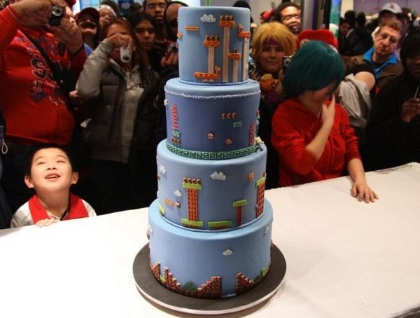

Make Magazine: Super Mario Bros Level Cake

There aren't many details about the cake (see: none), but it looks awesome. I'm not a big fan of fondant, and the cake looks too cool to eat anyway.
Previously: Olly Moss Star Wars Trilogy Posters - MondoTees Next: Lost Levels: The Legend of Zelda Prototype